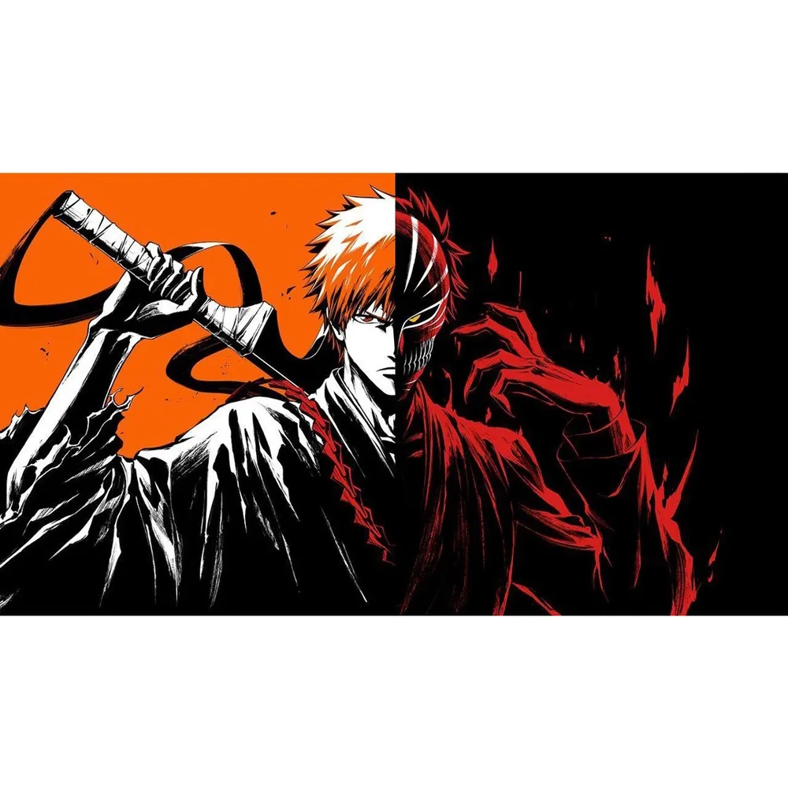

sobre o jogo
O jogo consiste em um RPG de ação e aventura, inspirado na famosa obra do escritor Tite Kubo(Bleach). A priore o foco é ser um game rapido com altas recompensas.
Está preparado para essa jornada?

entre na aventura nesse mundo cheio de ação e aventura oriental e cheio de reviravoltas
O jogo consiste em um RPG de ação e aventura, inspirado na famosa obra do escritor Tite Kubo(Bleach). A priore o foco é ser um game rapido com altas recompensas.
Está preparado para essa jornada?